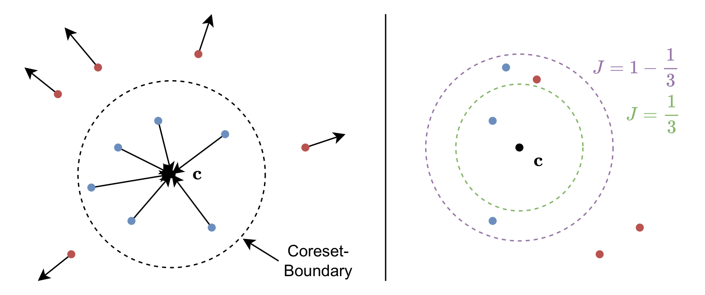
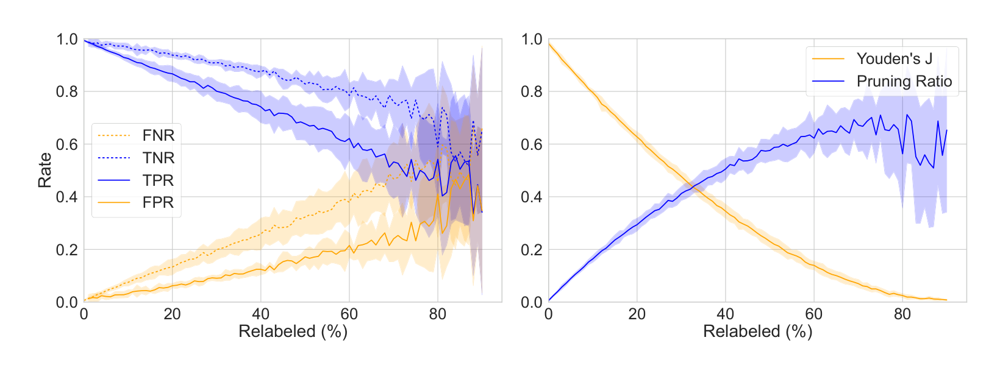
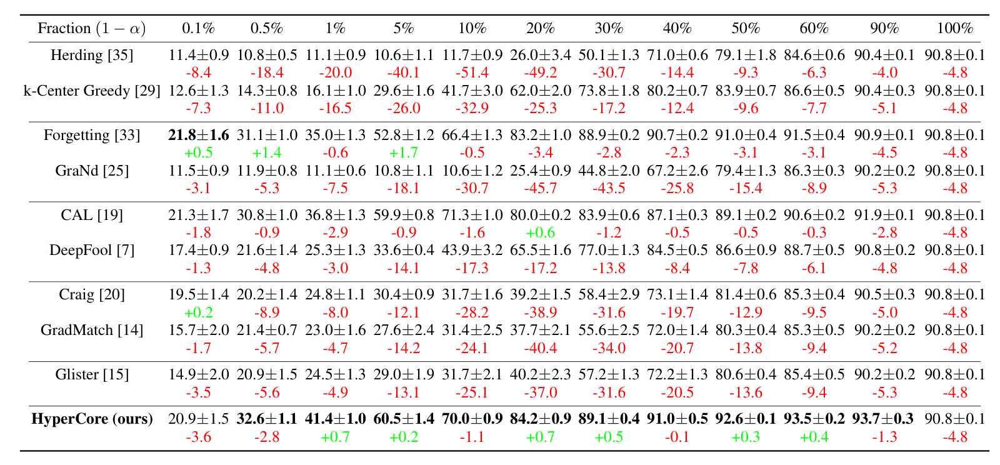
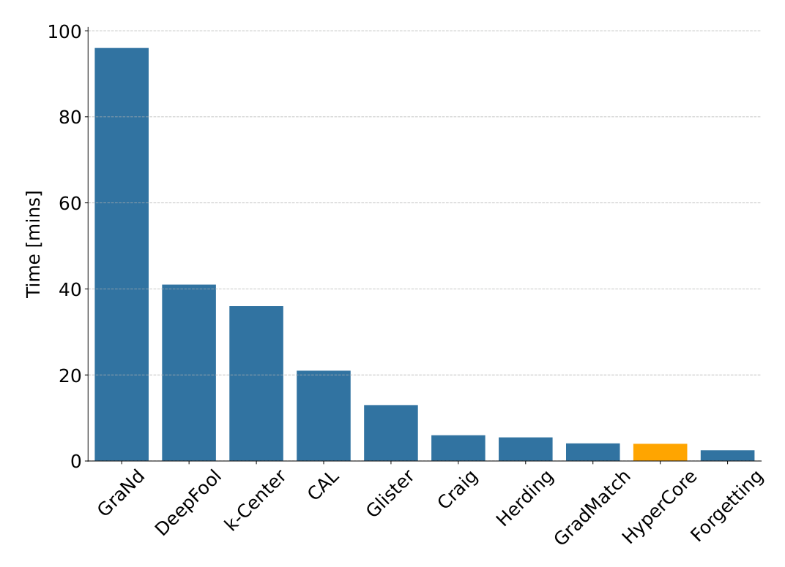

The goal of coreset selection methods is to identify representative subsets of datasets for efficient model training. Yet, existing methods often ignore the possibility of annotation errors and require fixed pruning ratios, making them impractical in real-world settings. We present HyperCore, a robust and adaptive coreset selection framework designed explicitly for noisy environments. HyperCore leverages lightweight hypersphere models learned per class, embedding in-class samples close to a hypersphere center while naturally segregating out-of-class samples based on their distance. By using Youden’s J statistic, HyperCore can adaptively select pruning thresholds, enabling automatic, noise-aware data pruning without hyperparameter tuning. Our experiments reveal that HyperCore consistently surpasses state-of-the-art coreset selection methods, especially under noisy and low-data regimes. HyperCore effectively discards mislabeled and ambiguous points, yielding compact yet highly informative subsets suitable for scalable and noise-free learning.

HyperCore trains one small hypersphere model per class: in-class samples are pulled toward the center while out-of-class samples are pushed away, so the embedding norm becomes an interpretable conformity score (left). Instead of fixing a global pruning ratio, each class picks its own cut with Youden's J statistic. It selects the threshold that maximizes the gap between true positive rate and false positive rate (right).

HyperCore stays reliable as labels are corrupted: TPR and TNR remain well above FPR and FNR under increasing label poisoning (left), so clean points are kept and corrupted ones are dropped. The adaptively selected pruning ratio rises with the noise level while Youden's J decays slowly. The cut adapts rather than collapses (right).

With 10% corrupted labels on CIFAR-10, gradient- and submodular-based selectors fall apart, while HyperCore is the best method at every fraction from 0.5% upward. From 40% retained data on, it even beats training on the whole noisy dataset, reaching 92.6% with half the data against 90.8% on all of it.

HyperCore is also cheap: it needs no full-model backpropagation, the per-class hypersphere models train in parallel, and thresholding stays near-linear. On CIFAR-10 it is among the fastest selection methods, requiring only a fraction of GraNd's selection time.
@inproceedings{moser2026hypercore,
title={HyperCore: Coreset Selection under Noise via Hypersphere Models},
author={Moser, Brian B. and Shanbhag, Arundhati S. and Nauen, Tobias and Frolov, Stanislav and Raue, Federico and Folz, Joachim and Dengel, Andreas},
booktitle={Pattern Recognition -- ICPR 2026},
series={Lecture Notes in Computer Science},
publisher={Springer},
pages={213--226},
year={2026},
doi={10.1007/978-3-032-31335-5_15}
}